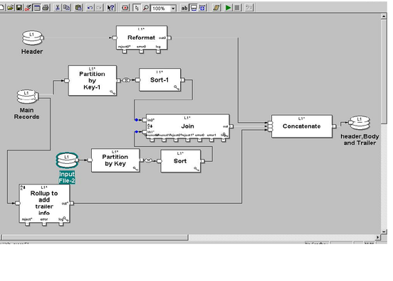

| LevSelector.com |
Ab Initio
| On This Page | Other Pages |
|
- intro |
- xx |
Intro ------------------------------
The Latin term ab initio means from the beginning .
"Ab Initio Software LLC" is a company which excels in solving extreme data processing problems.
Many IT people never heard of Ab Initio. Why? Well, first, Ab Initio never advertise themselves. They get lots of business by referral - in fact so much that they don't need any advertising. Second, because Ab Initio only works with few clients who have extreme data processing problems. Ab Initio is not common, and they don't sell software. They sell solutions - and license the tools to provide those solutions. So it is more a solutions company, not a software company.
Most of those people who have heard about Ab Initio think about it as an ETL provider. This is wrong. Yes, Ab Initio has excellent tools for ETL (Extract, Transform, Load). But for some problems they provide solutions which have nothing to do with databases. In fact, in many situations they recommend to STOP using database at all for performance reasons.
If you are a small or medium client - Ab Initio is an overkill. But if you have thousands of transactions per second, big databases, very active web site, or huge transactional or accounting system - Ab Initio is a savior. Their pricing model is a bit unusual, but the long term costs are reasonable.
You can read a short description on wikipedia, but as of today (20098) this description doesn't give a good honest representation of the company (in my opinion).
Ab Initio is a private company, its main offices are in Lexington, Massachusetts (near Boston, USA - since 1994), but they have offices all over the world (as you can see on their web site). They have very good talented devoted people. I've heard that when you are calling their customer service - there is a 75% chance that you will speak with a Ph.D.. It may very well be true. The company was formed by former employees of the Thinking Machines Corporation. Some key people: Craig W. Stanfill, Richard A. Shapiro, Stephen A. Kukolich.
Ab Initio also uses its own people as well as independent consulting firms to build proof of concept for a client, and then to guide clients in using their tools.
Unfortunately Ab Initio provides very little information about their solutions to general public. So not getting into details, most of AI functionality can be scripted using several commands which you can give from prompt (with many options):
The scripts can be easily integrated to work with external schedulers.
Somewhere ~1997 Ab Initio has introduced Graphical Development Environment - a very powerful desktop software. You place components on the screen, connect them, define what they do and how. So your application is a graph. You can create components which consist of other components which consist of other components, etc. - so effectively you can drill deeply into the diagram. I've seen this tool generating powerful data processing application in less than 10 minutes. You can run the application right from the IDE, or save it as a set of scripts (ksh for unix). The scripts will call misc. component libraries. The libraries are written in C++.
Some of the key elements of the system:
Main power of Ab Initio - parallelism - is achieved via its "Co>Operating System" which provides the facilities for "parallel execution (multiple CPUs and/or multiple boxes), platform independent data transport, check pointing, and process monitoring. A lot of attention is devoted to monitoring resources (CPU, memory). multi-file, multi-directory.
Component Library - a set of software modules to perform sorting, data transforming, and high speed data loading and unloading tasks.
Here are some of the main components
| Component Group | Component |
| 1.Dataset Components | input file |
2.Database Components |
input table output table run sql |
3.Partition Components |
by key by round-robin by expression by range with load-balance |
4.De-Partition Components |
concatenate interleave (round-robin) merge gather (arbitrary) |
5.Sort Components |
sort |
| 6.Transform Components |
filter join reformat rollup aggregate scan |
Graphical interface allows to create workflows by combining multiple components, for example:

You can add components to a graph, click on components to configure them. You can use a graph as a reusable subgraph to include into other graphs. The lines between components may represent sequential or parallel flows of data.
Ab Initio tools incorporate best practices, such as check-pointing, rerunnability, tagging everything with unique Id-s, etc.
One interesting concept is ICFF - indexed compressed flat file (ICFF).
ICFF = Indexed Compressed Flat Lookup File. Components: Lookup function: search index, finds block(s), read blocks from disk, uncompresses, searches inside the block for matching record(s). ICFF take 10-times less disk space than normal uncompressed lookup files. Lookup time is fast.
|
Unfortunately Ab Initio doesn't advertise or publish any information.
So there are just bits and pieces here and there. Here is an interesting blog:
1
| Question | Answer ========================================================== |
| Phases vs Checkpoints | Phases - are used to break the graph into pieces. Temporary files created during a phase will be deleted after its completion. Phases are used to effectively separately manage resource-consuming (memory, CPU, disk) parts of the application. Checkpoints - created for recovery purposes. These are points where everything is written to disk. You can recover to the latest saved point - and rerun from it. You can have phase breaks with or without checkpoints. |
| xfr | A new sandbox will have many directories: mp, dml, xfr, db, ... . xfr is a directory where you put files with extension .xfr containing your own custom functions (and then use : include "somepath/xfr/yourfile.xfr"). Usually XFR stores mapping. |
| three types of parallelism | 1) Data Parallesim - data (partitionning of data into parallel streams for parallel processing). 2) Componnent Paralelism (execute simultaneously on different branches of the graph) 3) Pipeline (sequential). |
| MFS | Multi-File System m_mkfs - create a multifile (m_mkfs ctrlfile mpfile1 ... mpfileN) m_mkdir - to add more directories to existing directory structure |
| Memory requirements of a graph |
|
| How to calculate a SUM | SCAN |
| dedup sort with null key | If we don't use any key in the sort component while using the dedup sort,
|
| join on partitioned flow | file1 (A,B,C) , file2 (A,B,D). We partition both files by "A", and then join by "A,B". IS it OK? Or should we partition by "A,B" ? Not clear. |
| checkin, checkout | You can do checkin/checkout using the wizard right from the GDE using versions and tags |
| how to have different passwords for QA and production | parameterize the .dbc file - or use environmental variable. |
| How to get records 50-75 out of 100 |
|
| Hot to convert a serial file into FFS | create MFS, then use partition component |
| project parameters vs. sandbox parameters | When you check out a project into your sandbox - you get project parameters. Once in your sandbox - you can refer to them as sandbox parameters. |
| Bad-Straight-flow | error you get when connecting mismatching components (for example, connecting serial flow directly to mfs flow without using a partition component) |
| merging graphs | You can not merge two ab initio graphs. You can use the ouput of one graph as input for another. You can also copy/paste the contents between graphs. See also about using .plan |
| partitioning, re-partitioning, departitioning |
|
| lookup file | for large amounts of data use MFS lookup file (instead of serial) |
| indexing | No indexes as such. But there is an "output indexing" using reformat and doing necessary coding in transform part. |
| Environment project | Environment project - special public project that exists in every Ab Initio environment. It contains all the environment parameters required by the private or public projects which constitute AI Standard Environment. |
| Aggregate vs Rollup | Aggregate - old component Rollup - newer, extended, recommended to use instead of Agregate. (built-in functions like sum count avg min max product, ...) |
| EME, GDE, Co-operating sytem |
|
| fencing | fencing means job controlling on priority basis. Fencing - changing a priority of a job |
| Continuous components | Continuous components - produce useful output file while running continously. For example, Continuous rollup, Continuous update batch subscribe |
2
| Question | Answer ========================================================== |
| deadlock | Deadlock is when two or more processes are requesting the same resource. To avoid use phasing and resource pooling. |
| environment |
|
| wrapper script | unix script to run graphs |
| multistage component | A multistage component is a component which transforms input records in 5 stages (1.input select, 2.temporary initialization, 3.processing, 4. output selection, 5.finalize). So it is a transform component which has packages. Examples: scan Normalize and Denormalize, rollup scan normalize and denormalize sorted. |
| Dynamic DML | Dynamic DML is used if the input metadata can change. Example: at different time different input files are recieved for processing which have different dml. in that case we can use flag in the dml and the flag is first read in the input file recieved and according to the flag its corresponding dml is used. |
| fan in, fan out |
|
| lock | a user can lock the graph for editing so that others will see the message and can not edit the same graph. |
| join vs lookup | Lookup is good for spped for small files (will load whole file in memory). For large files use join. You may need to increase the maxcore limit to handle big joins. |
| multi update | multi update executes SQL statements - it treats each input record as a completely separate piece of work. |
| scheduler |
|
Api and Utility modes in input table |
These are database interfaces (api - uses SQL, utility - bulk loads, whatever vendor provides) |
| lookup file |
|
| Calling stored proc in DB | You can call stored proc (for example, from input component). In fact, you can even write SP in Ab Initio. Make it "with recompile" to assure good performance. |
| Frequently used functions | string_ltrim, string_lrtrim, string_substring, reinterpret_as, today(), now() |
| data validation | is_valid, is_null, is_blank, is_defined |
| driving port | When joining inputs (in0, in1, ...) one of the ports is used as "driving (by default - in0). Driving input is usually the largest one. Whereas the smallest can have "Sorted-Input" parameter be set to "Input need not be sorted" because it will be loaded completely in memory. |
| Ab Initio vs Informatica for ETL | Ab Initio benefits: parallelism built in, mulitifile system, handles huge amounts of data, easy to build and run. Generates scripts which can be easily modified as needed )if something couldn't be done in ETL tool itself). The scripts can be easily scheduled using any external scheduler - and easily integrated with other systems. Ab Initio doesn't require a dedicated administrator. Ab Initio doesn't have built-in CDC capabilities (CDC = Change Data Capture). Ab Initio allows to (attach error / reject files) to each transformation and capture and analyze the message and data separately (as opposed to Informatica which has just one huge log). Ab Initio provides immediate metrics for each component. |
| override key | override key option is used when we need to join 2 fields which have different field names. |
| control file | control file should be in the multifile directory (contains the addresses of the serial files) |
| max-core | max-core parameter (for example, sort 100 MBytes) specifies the amount of memory used by a component (like Sort or Rollup) - per partition - before spilling to disk. Usually you don't need to change it - just use default value. Setting it too high may degrade the performance because of OS swapping and degrading of the performance of other components. |
| Input Parameters | graph > select parameters tab > click "create" - and create a parameter. Usage: $paramname. Edit > parameters. These parameters will be substituted during run time. You may need to declare you parameter scope as formal. |
| Error Trapping | Each component has reject, error, and log ports. Reject captures rejected records, Error captures corresponding error, and log captures the execution statistics of the component. You can control reject status of each component by setting reject threshold to either Never Abort, Abort on first reject, or setting ramp/limit. You can also use force_error() function in transform function. |
3
| Question | Answer ========================================================== |
| How to see resource usage | In GDE goto options View > Tracking Details - will see each component's CPU and memory usage, etc. |
| assign keys component | Easy and saves development time. Need to understand how to feed parameters, and you can't control it easily. |
| Join in DB vs join in Ab Initio |
|
| Join with DB | not recommended if number of records is big. It is better to retrieve the data out - and then join in Ab Initio. |
| Data Skew | Parameter showing how data is unevenly distributed between partitions. skew = (partition size - avg.part.size)* 100 / (size of the largest partition) |
| dbc vs cfg | .dbc - database configuration file (dbname, nodes, version user/pwd) - resides in the db directory .cfg - any tyoe of config file. for example, remote connection config (name of remote server, user/pwd to connect to db, location of OS on remote machine, connection method). .cfg file resides in the config dir. |
| compilation errors | depth not equal data format error etc... depth error : we get this error.. when two components connected together but does't match there layout |
| types of partitions | broadcast pbyexpression pbyroundrobin pbykey pwithloadbalance |
| unused port | when joining, used records go to the output port, unused records - to the unused port |
| tuning performance |
|
| delta table |
|
| scan vs rollup | rollup - performs aggregate calculations on groups, scan - calculates cumulative totals |
| packages | used in multistage components or transform components |
| Reformat vs "Redefine Format" |
|
| Conditional DML | DML which is separated based on a condition |
| SORTWITHINGROUP |
|
| passing a condition as a parameter | Define a Formal Keyword Parameter of type string. For example, you call it FilterCondition, and you want it to do filtering on COUNT > 0 . Also in your graph in your "Filter by expression" Component enter following condition: $FilterCondition Now on your command line or in wrapper script give the following command |
| Passing file name as a parameter | #!/bin/ksh
#Running the set up script on enviornment
typeset PROJ_DIR $(cd $(dirname $0)/..; pwd)
. $PROJ_DIR/ab_project_setup.ksh $PROJ_DIR
#Exporting the script parameter1 to INPUT_FILE_NAME
if [ $# -ne 2 ];
then
INPUT_FILE_PARAMETER_1 $1
INPUT_FILE_PARAMETER_2 $2
# This grpah is using the input file
cd $AI_RUN
./my_graph1.ksh $INPUT_FILE_PARAMETER_1
# This graph also is using the input file.
./my_graph2.ksh $INPUT_FILE_PARAMETER_2
exit 0;
else
echo Insufficient parameters
exit 1;
fi
-------------------------------------
#!/bin/ksh
#Running the set up script on enviornment
typeset PROJ_DIR $(cd $(dirname $0)/..; pwd)
. $PROJ_DIR/ab_project_setup.ksh $PROJ_DIR
#Exporting the script parameter1 to INPUT_FILE_NAME
export INPUT_FILE_NAME $1
# This grpah is using the input file
cd $AI_RUN
./my_graph1.ksh
# This graph also is using the input file.
./my_graph2.ksh
exit 0; |
| How to remove header and trailer lines? | use conditional dml where you can separate detail from header and trailer. For validations use reformat with count :3 (out0:header out1:detail out2:trailer.) |
| How to create a multi file system on Windows |
|
| Vector | A vector is simply an array. It is an ordered set of elements of the same type (type can be any type, including a vector or a record). |
| Dependency Analysis | Dependency analysis will answer the questions regarding datalinage, that is where does the data come from what applications prodeuce and depend on this data etc.. |
4
| Question | Answer ========================================================== |
| Surrogate key | There are many ways to create a surrogate key. For example, you can use next_in_sequence() function in your transform. Or you can use "Assign key values" component. Or you can write a stored procedure - and call it. Note: if you use partitions, then do something like this: (next_in_sequence()-1)*no_of_partition()+this_partition() |
| .abinitiorc | This is a config file for ab initio - in user's home directory and in $AB_HOME/Config. It sets abinitio home path, configuration variables (AB_WORK_DIR, AB_DATA_DIR, etc.), login info (id, encrypted password), login methods for hosts for execution (like EME host, etc.), etc. |
| .profile | your ksh init file ( environment, aliases, path variables, history file settings, command prompt settings, etc.) |
| data mapping, data modelling | |
| Hwo to execute the graph | From GDE - whole graph or by phases. From checkpoint. Also using ksh scripts |
| Write Multiplefiles | A component which allows to write simultaneously into multiple local files |
| Testing | Run the graph - see the results. Use components from Validate category. |
| Sandbox vs EME | Sandbox is your private area where you develop and test. Only one project and one version can be in the sandbox at any time. The EME Datastore contains all versions of the code that have been checked into it (source control). |
| Layout | Where the data-files are and where the components are running. For example, for data - serial or partitioned (multi-file). The layout is defined by the location of the file (or a control file for the multifile). In the graph the layout can propagate automatically (for multifile you have to provide details). |
| Latest versions | April 2009: GDE ver.1.15.6, Co-operative system ver 2.14. |
| Graph parameters | menu edit > parameters - allows you to specify private parameters for the graph. They can be of 2 types - local and formal. |
| Plan>It | You can define pre- and post-processes, triggers. Also you can specify methods to run on success or on failure of the graphs. |
| Frequently used components |
|
| running on hosts | co>operating system is layered on top of native OS (unix). When running from GDE, GDE generates a script (according to "run" setings). Co>op system will execute the scripts on different machines (using specified host settings and connection methods, like rexec telnet rsh rlogin) - and then return error or success codes back. |
| conventional loading vs direct loading | This is basically an Oracle question - regarding SQLLDR (SQL Loader) utility. Conventional load - using insert statements. All triggers will fire, all contraints will be checked, all indexes will be updated. Direct load - data is written directly block by block. Can load into specific partition. Some constraints are checked, indexes may be disabled - need to specify native options to skip index maintenance. |
| semi-join | abinitio online help gives 3 examples of joins: inner join, outer join, and semi join.
|
http://www.geekinterview.com/Interview-Questions/Data-Warehouse/Abinitio/page10
10,11,12,13,14,15,16,17,18,19,20
Some alternative vendors:
Disclaimer
This page contains only data publicly available on the web. It doesn't contain any secret or proprietary information.
| Question | Answer ========================================================== |
| xxxx | xxxx |
| Question | Answer ========================================================== |
| xxxx | xxxx |